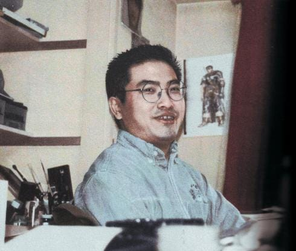

- Clothes for your bones -
Muere a los 54 años Kentaro Miura, autor del famoso manga japonés 'Berserk'

Lamentamos informar el fallecimiento de Kentaro Miura, autor del manga Berserk.
Esto fue confirmado por la cuenta de Twitter donde informan que el autor murió el 6 de Mayo de 2021 pero la noticia se dio a reconocer recién ahora. Miura falleció debido a un aneurisma en la aorta, su familia confirmo la noticia revelando que tuvo un funeral privado.
Miura tenía 54 años de edad.